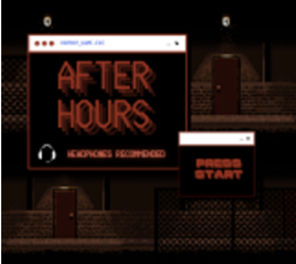
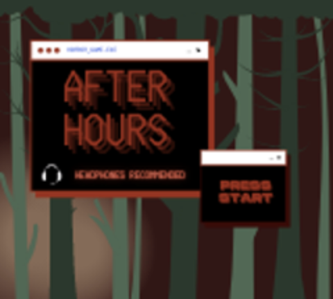

Plans and Progress
What Our Project Will Do
Our project consists of creating a horror game that can be played on multiple devices. It is a top-down shooter game where the player shoots its enemies in order to escape and move on to the next stage. The player has a HP value which will decrease every time it takes a hit from an enemy. These enemies are zombie-like figures that approach the player from multiple directions and are littered throughout the map.
We will create a fun immersive storyline where the player starts off chopping some wood, after which a branch falls and knocks the player out. When the player ‘wakes up’ in an unfamiliar part of the forest, he is surrounded by enemies determined to turn the player into a zombie. The goal is to defeat these enemies and the ‘final’ boss in order to return to the players original life which includes their home, family and kids. However, the final boss is not demonstrated in the prototype, the final map is where the guards warn the player about the final boss.
How To Do It
Like mentioned in our goals above, the initial part of our game making process includes planning out our storyline as well as experimenting with various pixel art styles and game prototyping. This is key for the development process so as to explore modifications to make the game more appealing storyline and animation wise. Aseprite allows us to build valuable characters, objects, tools, and customize animations. Game prototyping also allows us to discover interface and mechanical problems that could arise if not addressed early on.
We have decided to use GB studio which is a game boy game maker for prototyping. Due to our choice of game development software, our prototype does not contain colours, only can move in four directions. We are also unable to create our own functions or behaviours as they are pre-made and limited in the software engine itself.
The main purpose of choosing to make a simple prototype is so we can make a short playable game in the short amount of time given to test out the plotline, functionalities of top-down shooter and our AI enemies. After creating the prototype, we will begin coding with C++ in Unity due to its more powerful engine and flexibility. While coding the program, we will also aim to create graphics and soundtracks if we have the time to do so. We will also add various levels to the game and create a more elaborate plotline to make it more realistic and immersive.
How Far Have We Got
We have created our prototype and it is now playable with 1 stage with 4 maps, a short storyline, established attack systems and players have a HP value. AI enemies that were created have the capacity to approach and attack the player. Players can also choose between male and female avatars. In regard to the environment, there are 4 different maps which contain enemies that look different but attack in the same way and have the same strength. Maps also have different layouts. We have also included sample background music from the internet but will aim to create our own in the 10 weeks given after this as we lack the time and expertise to create one from scratch now.
How It Has Progressed
The game developers (Nayli, Yu-Cheng and Kelvin) had to first learn how to use GB studio. GB studio is much easier than Unity with its extensive usage of C++ and hence appropriate for game prototyping at the beginning. They then created graphics such as map tilesets and character sprites, which were achieved using a licensed program called Aseprite. Aseprite was a useful tool as it was designed primarily for pixel art, as long as we had chosen the correct colour palette for our intended platform everything should run smoothly. Shooter and AI enemies are then put into pace holders where we add in functionalities. We also took note of all the issues while prototyping and searched for demonstrations and solutions online including our first stage of debugging.
Dead Ends and Decisions
There were no dead-ends per se since we merely developed a prototype, but it was challenging.
Creating AI was challenging as the robots need to know when and what to do under certain circumstances. We were also limited to simple actions such as simply allowing the player to move up, down, left or right instead of detailed actions such as dodging enemies.
Creating player animation and graphics is time consuming and requires skills, however we managed to create our very own unique animations using Aseprite and Tiled.
A combat system requires many different features storing different values such as HP, items and such. This requires high-level Object-Oriented Programming (OOP) skills to achieve which is not within our skillset. Therefore, our prototype only incorporates simple HP values.
In addition, the design process of the game is limited as GB Studio doesn’t allow a user to design the map or edit the text of the game. Initially, we had created a pixel style image which to incorporate into the game as an opening/ending screen but unfortunately GB studio does not support that function.
 images we intended to include into the game
To overcome this obstacle, we decided to use a different software, Tiled to create a map for the game.
Due to the simplicity of GB studio, movement of the player is limited to 4 directions, and we were unable to apply the player status bar on the top screen. It was also very difficult to create and edit the game together using GB studio as collaboration is not a function. Therefore, we split off into our own tasks to add into the game.
Time Frame
Assignment
| Week 10/5/21 | Week 17/5/21 | Week 24/5/21 | |
|---|---|---|---|
|
Nayli (14 hours) |
|
|
|
|
Melanie (25 hours) |
|
|
|
|
ShuYun (2 hours) |
|
|
|
|
Chansouda (10 hours) |
|
|
|
|
Kelvin (18 hors) |
|
|
|
|
Yu-Cheng (20 hours) |
|
|
|
Ten-Week Plan
| Tasks | |
|---|---|
| Week 1 | Familiarise the team with the UNITY engine. UNITY is a more powerful engine with less restrictions and allows us to create more specific and detailed functions. |
| Week 2 | Learn to polish up assets and remake assets with full colour scale for the UNITY engine. This will also require adding additional frames of movement and orientation for refined play control, for both player and NPC/enemies. |
| Week 3 | Consult the team to storyboard the direction of the game; to come up with a more comprehensive and engaging storyline and plot. |
| Week 4 | Sound effects and soundtrack creation, we will create our own. Music and auditory cues are important tools for manipulating emotion and creating a narrative to create a more interactive and immersive experience in games. |
| Week 5 | Learn the code required to allow for fine-tuned player controls, a multitude of tutorials and learning tools available to achieve this. |
| Week 6 | Begin assembly of maps and environmental details, add collision to terrain. We will still use Tiled in conjunction with Unity’s map creation kit as Tiled is more flexible in its capabilities. |
| Week 7 | Begin construction and assembly of the game on the UNITY engine by using all of the assets that we have created with the weeks leading up to this point, adding anything extra that we come up with while doing so. |
| Week 8 | Begin bug testing internally as we continue working on the game, we will attempt to play the game ‘incorrectly’ and attempt to skip parts to see if there are any game ending glitches to do with scene sequencing etc. |
| Week 9 | Release an alpha version of the product to allow for more player feedback and bug squashing. |
| Week 10 | We will then take into account the feedback of players to make any further improvements to the game, and then release it. |
Skills and Jobs
Game Developer
Game developers work on the design, development, debugging and other technical support of the game architecture and major functions.
Responsibilities:
-
Investigate reported bugs and provide reproducible steps to the team
-
Work with programmers and artists to prioritize areas of change in your test plans
-
Setup and maintain multiple test devices, including PCs, mobile phones and consoles
-
Communicate found issues to team members, including identifying potential defect owners
-
Effectively evaluate and communicate defect severity and potential impact
Key Qualifications:
-
Excellent written and verbal communication skills
-
Ability to discover and precisely communicate steps to reproduce issues
-
Knowledge of games and game industry trends
-
Bachelor's degree is preferred
-
Experience testing one or more games in a professional environment is a plus
-
Relevant certification in programming languages
Graphic Animator
We are seeking employees that are experts of design, and creating 2D and 3D images of characters, background, accessories, and other objectives that will be included in our future game project.
Responsibilities:
-
Designing and producing top-quality animations
-
Researching video game animation trends, techniques, and statistics
-
Work in a highly collaborative environment to fully realize our characters and environments through movement
Key Qualifications:
-
Bachelor's degree in computer art and/or animation
-
Good understanding of video game development and the art-creation process
-
Exceptional communication and teamwork skills
-
A creative eye for art direction and video game special effects
-
Relevant certification in programming languages
Digital Marketing Analyst
We are looking for a digital marketing analyst that has a good understanding of the gaming industry, market and target audiences.
Responsibilities:
-
Track online game marketing patterns
-
Designing campaign strategies
-
Collect & analyse data for marketing
-
Communicate with clients
Key Qualifications:
-
Degree in digital marketing
-
Knowledge of games and game industry trends
-
Understanding of digital marketing analysis
-
Great communication skills to team members and clients to present digital marketing strategies
-
Social media skills to promote our game
Software Debug Engineer
Debugging is twice as hard as writing the code in the first place. We are seeking a Software debug engineer who has the passion for software debug, a background in application software development and who wants to learn and develop their skills.
Responsibilities:
-
Debug and root cause software issues and determine if there are any hardware issues preventing the software from operating as expected
-
Design, develop and sustain debug scripts and diagnostic software
-
Drive changes in software design to help create a most robust and user-friendly software stack
-
Perform code reviews and suggest new optimized code
Key Qualifications:
-
Bachelor’s degree or equivalent experience in computer science or a related field
-
Proficiency in C++ development
-
Understand the hardware and software architecture of the product
-
Strong written, verbal and presentation skills for expressing complex ideas and initiatives to audiences of varied technical skills
-
Passion for crafting software and tools
-
Positive and respectful attitude in a diverse team environment as well as independently